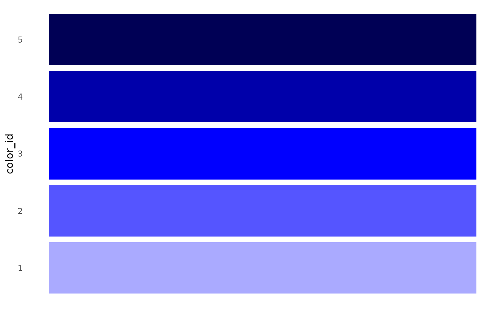

Count with percent
A classic count() returns the number of
observations.
data <- use_data_penguins()
data %>% count(island)
#> # A tibble: 3 × 2
#> island n
#> <fct> <int>
#> 1 Biscoe 168
#> 2 Dream 124
#> 3 Torgersen 52To add percent values, simply use count_pct() from
{explore}.
Add id
data %>% glimpse()
#> Rows: 344
#> Columns: 8
#> $ species <fct> Adelie, Adelie, Adelie, Adelie, Adelie, Adelie, Adel…
#> $ island <fct> Torgersen, Torgersen, Torgersen, Torgersen, Torgerse…
#> $ bill_length_mm <dbl> 39.1, 39.5, 40.3, NA, 36.7, 39.3, 38.9, 39.2, 34.1, …
#> $ bill_depth_mm <dbl> 18.7, 17.4, 18.0, NA, 19.3, 20.6, 17.8, 19.6, 18.1, …
#> $ flipper_length_mm <int> 181, 186, 195, NA, 193, 190, 181, 195, 193, 190, 186…
#> $ body_mass_g <int> 3750, 3800, 3250, NA, 3450, 3650, 3625, 4675, 3475, …
#> $ sex <fct> male, female, female, NA, female, male, female, male…
#> $ year <int> 2007, 2007, 2007, 2007, 2007, 2007, 2007, 2007, 2007…To add an id variable, simply use add_var_id() from
{explore}.
data %>% add_var_id() %>% glimpse()
#> Rows: 344
#> Columns: 9
#> $ id <int> 1, 2, 3, 4, 5, 6, 7, 8, 9, 10, 11, 12, 13, 14, 15, 1…
#> $ species <fct> Adelie, Adelie, Adelie, Adelie, Adelie, Adelie, Adel…
#> $ island <fct> Torgersen, Torgersen, Torgersen, Torgersen, Torgerse…
#> $ bill_length_mm <dbl> 39.1, 39.5, 40.3, NA, 36.7, 39.3, 38.9, 39.2, 34.1, …
#> $ bill_depth_mm <dbl> 18.7, 17.4, 18.0, NA, 19.3, 20.6, 17.8, 19.6, 18.1, …
#> $ flipper_length_mm <int> 181, 186, 195, NA, 193, 190, 181, 195, 193, 190, 186…
#> $ body_mass_g <int> 3750, 3800, 3250, NA, 3450, 3650, 3625, 4675, 3475, …
#> $ sex <fct> male, female, female, NA, female, male, female, male…
#> $ year <int> 2007, 2007, 2007, 2007, 2007, 2007, 2007, 2007, 2007…User defined report
Create a user defined report (RMarkdown template) to explore your own data.
create_notebook_explore(
output_dir = tempdir(),
output_file = "notebook-explore.Rmd")Data Dictionary
Create a Data Dictionary of a data set (Markdown File data_dict.md)
iris %>% data_dict_md(output_dir = tempdir())Add title, detailed descriptions and change default filename
description <- data.frame(
variable = c("Species"),
description = c("Species of Iris flower"))
data_dict_md(iris,
title = "iris flower data set",
description = description,
output_file = "data_dict_iris.md",
output_dir = tempdir())Color
You can make your explore-plot more colorful
data <- use_data_penguins()
data |> explore(flipper_length_mm, color = "lightskyblue")
data |>
drop_obs_with_na() |>
explore(flipper_length_mm, bill_length_mm,
target = sex, color = c("deeppink", "blue"))
You can even mix your own colors
colors <- mix_color("blue", n = 5)
colors
#> [1] "#AAAAFF" "#5555FF" "#0000FF" "#0000AA" "#000055"
show_color(colors)
colors <- mix_color("gold", "red", n = 4)
colors
#> [1] "#FFD700" "#FF8F00" "#FF4700" "#FF0000"
show_color(colors)
Or use some of the predefined colors in {explore}
get_color()
#> $a1
#> greylight red blue black greydark
#> "#a3a9b0" "#d32c1c" "#5dbcd2" "#000000" "#868e96"
#>
#> $apple
#> green yellow orange red violet blue
#> "#61bb46" "#fdb827" "#f5821f" "#e03a3e" "#963d97" "#009ddc"
#>
#> $google
#> blue green yellow red
#> "#4285f4" "#34a853" "#fbbc05" "#ea4335"
#>
#> $mario
#> mario luigi peach toad bowser donkeykong
#> "#e0102f" "#08a936" "#f096be" "#17419a" "#f8be10" "#742607"
#>
#> $python
#> yellow blue grey
#> "#ffde57" "#4584b6" "#646464"
#>
#> $r
#> blue
#> "#2065b8"
#>
#> $redbull
#> yellow red blue bluedark
#> "#ffc906" "#cc1e4a" "#223971" "#121f45"
#>
#> $slack
#> blue red yellow green violet
#> "#36c5f0" "#e01e5a" "#ecb22e" "#2eb67d" "#4a154b"
#>
#> $ubuntu
#> orange greydark greylight violet
#> "#dd4814" "#333333" "#aea79f" "#77216f"
colors <- get_color("google")
show_color(colors)
Period yyyymm
This is how to calculate with periods (format yyyymm)
yyyymm_calc(202410, add_month = 3)
#> [1] 202501
yyyymm_calc(c(202408, 202409, 202410), add_month = -1, add_year = -1)
#> [1] 202307 202308 202309